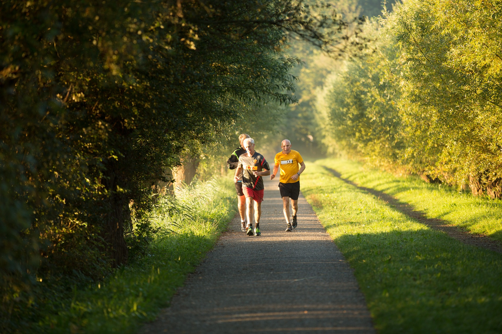
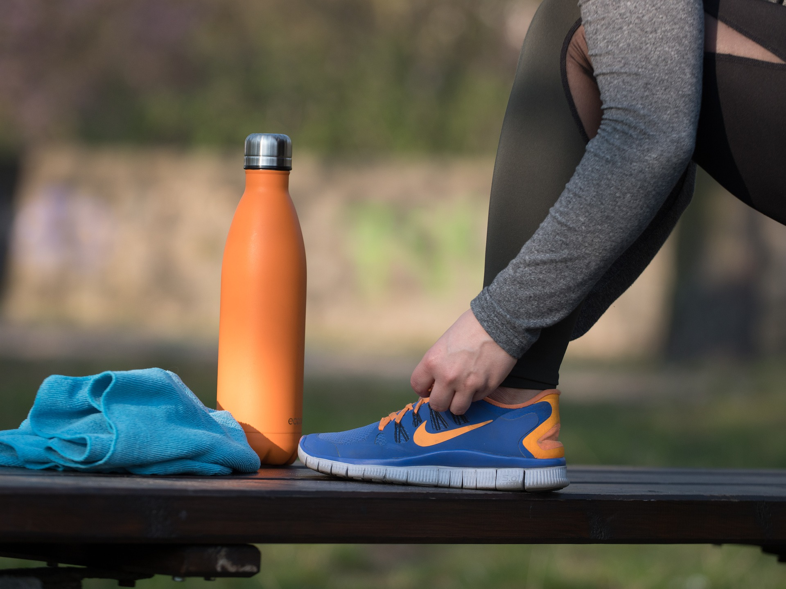
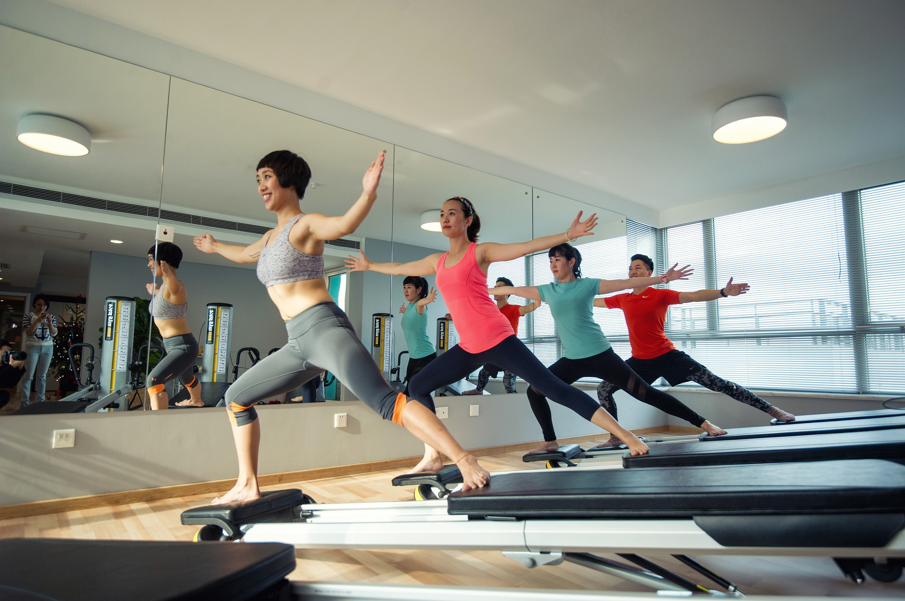

<!DOCTYPE html>
<html>
<head>
	<link rel=stylesheet type="text/css" href="運動.css">
	</head>
</html>
<style>
@import url('https://fonts.googleapis.com/css2?family=Noto+Sans+TC:wght@500&display=swap');
</style>
<title>Demantia_運動</title>
<body>
    <!--bar-->
    <header>
<nav>
    <ul class="flex-nav">
        <li><a href="file:///D:/Downloads/%E7%B6%B2%E9%A0%81/dementia/dementia%20aboutus.html">關於我們</a></li>
        <li><a href="file:///D:/Downloads/%E7%B6%B2%E9%A0%81/dementia/%E6%B8%AC%E9%A9%97.html">線上測驗</a></li>
        <li><a href="file:///D:/Downloads/%E7%B6%B2%E9%A0%81/dementia/%E9%81%8B%E5%8B%95.html">預防方法</a></li>
        <li><a href="file:///D:/Downloads/%E7%B6%B2%E9%A0%81/dementia/hospital.html">就醫資訊</a></li>
    </ul>
</nav>
</header>
    
    <!--標題-->
	<div class="title">
        <span>預防方法</span>
        
    </div>


    <!--小分類-->
    <div >
        <div class="category">
            <h2>運動</h2>
        
        </div>

        <a class="category" href="file:///D:/Downloads/%E7%B6%B2%E9%A0%81/dementia/%E9%A3%B2%E9%A3%9F.html">
            <h2>飲食</h2>
          
        </a>

        <a class="category" href="file:///D:/Downloads/%E7%B6%B2%E9%A0%81/dementia/%E7%94%9F%E6%B4%BB%E7%BF%92%E6%85%A3.html">
            <h2>其他生活習慣</h2>
           
        </a>
 
    
    </div>
    

     <!--內文-->
        <div class="content">

            <div class="content2">
            <span class="text">有氧運動</span>
            <p style="font-size: 120%; color: brown;">散步、騎腳踏車、爬樓梯、游泳等運動，都具有效果。考量老年人的體力，適度的進行，只要能達到 “臉紅心跳” 的程度即可。</p>在心跳速率增加，持續進行45分鐘以上，每週至少3次。根據研究，在這樣的運動條件之下，連續進行8週，能夠明顯改善失智及情緒的症狀。</p>
            </div>

            <div class="content2-1">
                
                
            </div>
            
            <div class="content3">
               
                
            </div>
    
            <div class="content3-1">
                <span class="text">重量訓練</span>
                <p>
                    <p style="font-size: 120%; color: brown;">⓵坐在椅子上，以雙腿緩慢抬起裝滿水的大型保特瓶，再緩慢放下，進行8次後休息3分鐘，重複5次。</p>
                    <p style="font-size: 120%; color: brown;">⓶在散步的過程中，自行攜帶飲用水(小瓶礦泉水)拿在手上，散步時同時揮動手臂，或是做出舉啞鈴的動作。</p>看似簡單的動作，能達到阻力訓練的效果，而舉重與肌力訓練能明顯改善失智的症狀。</p>
            </div>

            <div class="content4">
                <span class="text">平衡運動</span>
                <p>
                    <p style="font-size: 120%; color: brown;">太極拳、外丹功、瑜珈等運動，可以訓練老年人的平衡能力，更能提供有氧運動與重量訓練的助益。</p>
                    老年失智症患者較正常老年人有更容易跌倒。平衡訓練能夠強化肌力、增進動作協調性，進而減少跌倒的機會，降低骨折的傷害。
                </p>
            </div>
    
            <div class="content4-1">
                
                
            </div>
    
        </div>

        
            
        
      

    	
    

</body>
